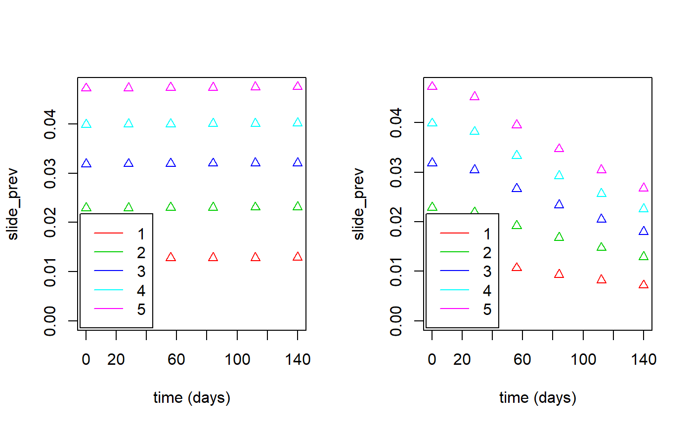

D_worked_example02.RmdThis is an example of how to load a dataset and carry out simulations of the progression of malaria in the main (non-cohort) population.
First load the package (install it first if necessary as shown in the Installation article:
Next create the list of input file locations to supply to the mainpop() function. Here the files are located online, so the list is created manually:
input_files <- list(
param_file=url("https://raw.githubusercontent.com/KeithJF82/vectorpower/master/inst/extdata/param_examples/model_parameters_const.txt"),
age_file=url("https://raw.githubusercontent.com/KeithJF82/vectorpower/master/inst/extdata/param_examples/age_data_145.txt"),
het_file=url("https://raw.githubusercontent.com/KeithJF82/vectorpower/master/inst/extdata/param_examples/het_data_9.txt"),
start_file=url("https://raw.githubusercontent.com/KeithJF82/vectorpower/master/inst/extdata/param_examples/start_data_example.txt"),
annual_file=url("https://raw.githubusercontent.com/KeithJF82/vectorpower/master/inst/extdata/param_examples/annual_data_example.txt")
)If using a dataset folder created using dataset_create(), this can be done automatically by using the load_dataset() function. Here the example folder in the inst/extdata subfolder, created in the first worked example, is used:
dataset_folder=system.file("extdata/DemoFolder1/",package="vectorpower")
input_files <- load_dataset(dataset_folder)The parameters defining the trial setup are then supplied to be used by mainpop():
# Length of time to run main population model from starting date before intervention begins
start_interval = 0.0
# Time points after the end of the starting interval at which benchmark data should be output
time_values = c(0.0,28.0,56.0,84.0,112.0,140.0)
# List of sets of values to load from starting data
n_mv_set = c(1:5)
# Intervention parameter given variable value (0= None, 1=ATSB kill rate, 2=bednet coverage, 3=IRS coverage)
int_v_varied = 1
# List of intervention parameter values
int_values = c(0.0,0.1) The parameters and list of input files are then passed to the mainpop() function:
mainpop_data <- mainpop(input_files = input_files, n_mv_set = n_mv_set, int_v_varied = int_v_varied,
int_values=int_values, start_interval = start_interval, time_values=time_values)
#>
#> Run 1 Mosquito density=0.5272 Intervention number=0
#> Intervention begun. ATSB kill rate=0
#> Run 2 Mosquito density=0.5272 Intervention number=1
#> Intervention begun. ATSB kill rate=0.1
#> Run 3 Mosquito density=0.8153 Intervention number=0
#> Intervention begun. ATSB kill rate=0
#> Run 4 Mosquito density=0.8153 Intervention number=1
#> Intervention begun. ATSB kill rate=0.1
#> Run 5 Mosquito density=1.083 Intervention number=0
#> Intervention begun. ATSB kill rate=0
#> Run 6 Mosquito density=1.083 Intervention number=1
#> Intervention begun. ATSB kill rate=0.1
#> Run 7 Mosquito density=1.341 Intervention number=0
#> Intervention begun. ATSB kill rate=0
#> Run 8 Mosquito density=1.341 Intervention number=1
#> Intervention begun. ATSB kill rate=0.1
#> Run 9 Mosquito density=1.593 Intervention number=0
#> Intervention begun. ATSB kill rate=0
#> Run 10 Mosquito density=1.593 Intervention number=1
#> Intervention begun. ATSB kill rate=0.1The resulting data can be used in cohort calculations or processed on its own. It can be saved to a file so that it can be used again if R is closed.
The plot_mainpop_data() function can be used to plot selected results:
par(mfrow=c(1,2))
plot1 <- plot_mainpop_data(input_list=mainpop_data,set_n_int=1,benchmark="slide_prev",age_start=0.0,age_end = 65.0)
plot2 <- plot_mainpop_data(input_list=mainpop_data,set_n_int=2,benchmark="slide_prev",age_start=0.0,age_end = 65.0)